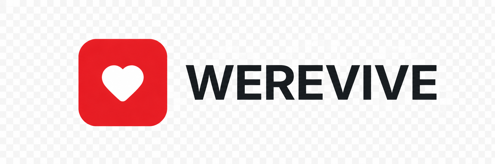

This is an adult cardiac-arrest awareness simulation for learners aged 12+. It does not assess real compression depth or certify CPR competence.
The AED controls are a generic learning diagram. Always follow the actual device and dispatcher instructions.
This first version is awaiting professional clinical review. Younger children will have a separate experience.
India emergency number · Resuscitation guidance